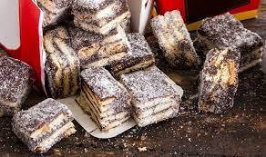

- 1 caixinha (ou lata) de leite condensado (395g)
- 2 colheres (sopa) de creme de leite (30g)
- 2 colheres (sopa) de manteiga (27g)
- 2 colheres (sopa) de chocolate em pó 14g
- 100g de biscoito Maizena (ou 20 biscoitos)
- Em uma panela grossa coloque o leite condensado, o creme de leite, a manteiga e o chocolate em pó.
- Leve ao fogo médio mexendo sempre até desgrudar do fundo da panela.
- Com o brigadeiro ainda quente, acrescente o biscoito em pedaços. Misture.
- Faça uma bola e cubra com um pano limpo. Deixe descansar de 1 a 2 horas, até que a massa dobre de volume.
- Coloque papel filme dentro de uma assadeira e despeje o doce ainda quente. Ajeite até formar um quadrado e cubra novamente com papel filme.
- Leve à geladeira por 30 minutos.
- Em seguida, retire o papel filme e corte em quadrados.
- Sirva-se